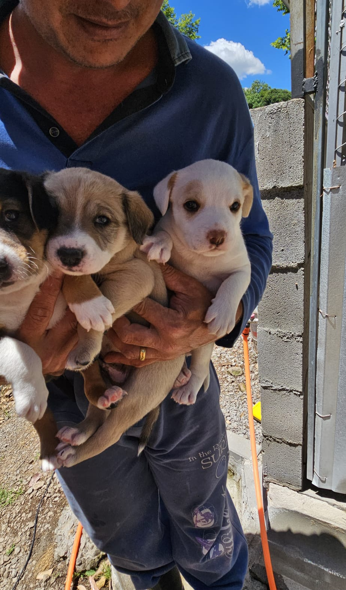

Doação Financeira (PIX)
Qualquer valor faz a diferença. Use nossa chave PIX (CNPJ): 12.345.678/0001-99
O voluntariado é a alma do nosso projeto. Precisamos de ajuda em diversas áreas:
Se você tem interesse em ser voluntário, por favor, preencha nosso formulário de cadastro!
Manter nosso abrigo tem um custo elevado. Sua doação é fundamental para continuarmos nosso trabalho. Você pode ajudar de várias formas:
Qualquer valor faz a diferença. Use nossa chave PIX (CNPJ): 12.345.678/0001-99
Aceitamos doações de:
Entre em contato para combinar a entrega.